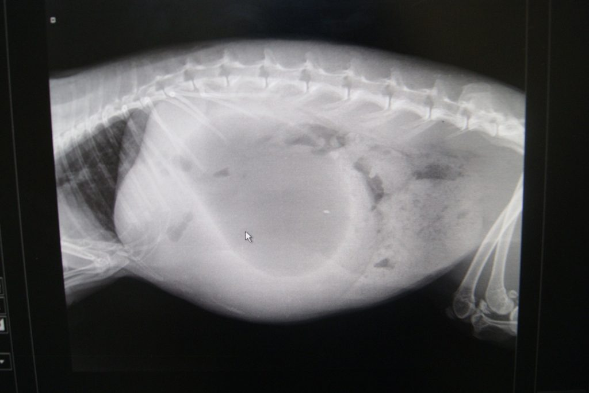
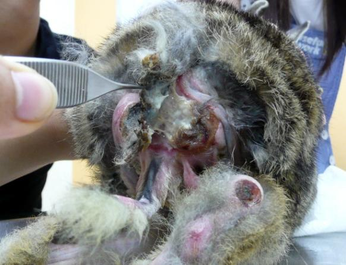
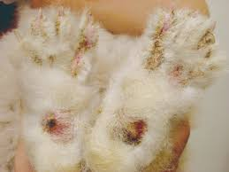
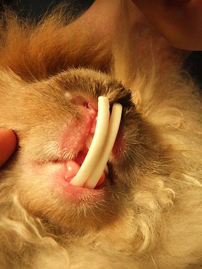

兔子是個膽小又脆弱的生物，而且他們位居生物鏈底層，就算生病了也會極力隱藏，不讓其他人發現， 所以飼主往往在疾病初期未能察覺，直到情況嚴重才送醫，造成不可挽回的情況。
因此，熟知兔兔常見疾病非常重要！需要隨時觀察才能及時治療～
以下分享幾種常見的兔兔疾病，請仔細收看吧！

當天氣出現季節轉換時，兔兔會開始進入換毛期，也會常出現可怕的疾病—毛球症！
兔子是不會吐的動物，不會像貓一樣吐毛球，所以兔兔很容易因為舔毛而將身上的毛吃下肚，若草吃的不夠多、水分不夠充足，就會造成腸阻塞，毛球無法排出體外。
兔兔會開始出現不吃不喝，窩著不敢動、肚子不舒服的症狀，超過12小時完全沒有自己進食排泄的情況時，一定要儘速就醫治療，否則會有生命危險。
此時醫生觸診腹部可能會出摸到硬物（必要時可能需拍X光，請視實際醫師的診療需求而定），就很有可能是毛球症或腸胃蠕動遲緩甚至胃脹氣，但是實際上肚子裡面塞的是什麼就無法明確判斷。
大量的吃草+適量蔬果+水分的補給
一定要立刻先去就醫，搭配藥物治療，在家裡可以幫兔兔做的緊急保養，多喝水保持腸道水分，可以將鳳梨酵素和木瓜酵素約5-10顆磨成粉溶20-30cc的水中，再分次給兔兔喝。
此外，兔兔這時候通常有不吃東西、不喝水、沒有排泄的症狀，要兔子自己進食比較困難，就需要灌水。灌水的方式和使用小針筒餵藥的方式相同。就算家裡沒有酵素也沒關係，就是要幫兔兔喝水。喝水很重要！
每次少量少量讓兔兔加減喝點水，至少1-10CC 都可以，只要有喝都好，如果喝得少，就1-2小時餵一次，餵水的時間就要縮短，喝得多就可以拉長3-4小時再餵一次，主要是要保持腸道水份，量沒有一定要多少，飼主自行依照兔兔的情況拿捏即可。

皮膚發紅、不正常的大量掉毛或局部區域掉毛、有白色皮屑。 黴菌、細菌感染、有傷口、濕疹、缺乏維生素。
必須請醫師診治，有些需擦藥、有些則需口服藥物，並隔離病兔避免傳染。
注意居住環境整潔與乾燥、兔籠及兔廁用熱水燙、常替兔兔梳毛，可防止毛髮中有異物、減少病菌孳生的機率！

由於兔兔的腳底板並沒有肉墊（貓狗才有），只能靠著厚厚的兔毛形成軟墊來當腳底的保護。
因此若兔兔經常性的踩在鐵條籠子上，則會造成腳底板處脫毛，脫毛區少了毛保護就更容易紅腫、破皮甚至感染。若再加上腳底沾到糞尿的情況，會惡化的更快！
初期
初期足炎會在腳掌出現脫毛的區塊，多半是在後腳，有時候也出現在前腳和腳趾。在這個時期，腳底皮膚變紅變腫，伴隨一些皮屑，但是兔子可以正常行走。然而，兔子的腳底沒有類似犬貓的足墊，而是靠厚毛來保護，厚毛的功能就像我們穿鞋子一般，失去厚毛保護的腳底很容易受傷。
慢性期
到了慢性期，兔子的腳底皮膚會更厚或是壞死，有時伴隨毛囊炎，甚至長出小膿包，這些小膿包因為壓迫的關係，通常出現在腳掌的內側面，兔子不會明顯表示疼痛，但主人們可以很清楚地摸到這些小膿包。有時則是小膿包破裂，兔子不斷舔舐傷口才被主人發現。這個時期的兔子會比較不愛活動，在休息或母雞蹲時，會避免使用患肢，把身體重心移向健康的腳。
加上塑膠踏墊或是軟墊保護，搭配就醫提供的口服和外用藥治療即可。若是有傷口，則必須配合包紮，通常都有不錯的預後。

兔子的牙齒很特別，終其一生會不斷的生長，同時不斷的磨損。在牙齦裡面的「齒根」其實是隱藏起來的齒冠，當露出的牙齒被磨掉，隱藏的齒冠就會被推出來補充。因此兔子的牙齒能常保如新，免除像其他動物因為年老逐漸失去牙齒的困擾。
括因為眼眶壓迫而出現流淚、眼球突出；尖刺刮傷口腔而不停的流口水；下巴突出或破掉的膿瘍；眼鼻分泌物；因為不舒服而減少進食等等。若是發現有這些狀況時，應該要儘快尋求獸醫師積極的治療，同時因為牙齒仍然會不斷的生長，後續要更密集的追蹤檢查。
照顧兔子的牙齒從建立正確的飲食習慣開始，兔子應該以牧草為主食，新鮮或乾燥的都可以。人類吃的蔬菜雖然也可以提供一部分纖維，但是以營養成份和磨牙效果來看還是比不上牧草。堅果、種子、和顆粒飼料容易造成兔子只做上下咬碎而沒有左右磨牙的動作。
定期檢查牙齒也很重要。門齒的咬合可以直接翻開嘴唇觀察，但是要看臼齒就得把兔子嘴巴張開了。動物醫院通常會使用有光源的檢耳鏡，或是特殊的開口器伸進口腔檢查，才有辦法觀察臼齒的咬合。所以我們會建議，至少每年帶兔寶貝到動物醫院檢查牙齒（以及全身健檢）。